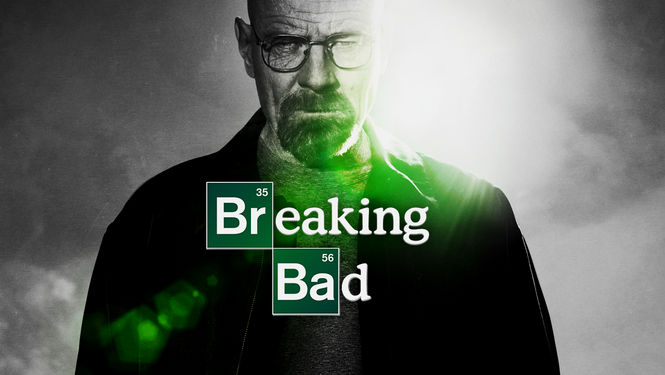
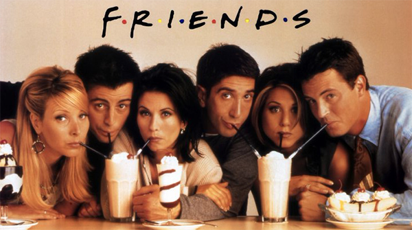

Description: Breaking Bad is an American crime drama television series created and
produced by Vince Gilligan. The show originally aired on the AMC network for five seasons, from January 20,
2008, to September 29, 2013. It tells the story of Walter White (Bryan Cranston), a struggling high school
chemistry teacher diagnosed with inoperable lung cancer. Together with his former student Jesse Pinkman
(Aaron Paul), White turns to a life of crime, producing and selling crystallized methamphetamine to secure
his family's financial future before he dies, while navigating the dangers of the criminal world.
The title is from a Southern colloquialism meaning to "raise hell". Breaking Bad is set and was
filmed in Albuquerque, New Mexico.
My review: A single phrase defines this indescribable series: "The best product that
television has ever made". Yes, this series with only five seasons is able to mark our lives and to thrill
us like never before the television was able, I believe that this is the mark of the evolution of the TV,
exposing that quality is not only in the cinema. This series is extremely meticulous and symbolist.

Description: Friends (stylized as F•R•I•E•N•D•S) is an American television sitcom,
created by David Crane and Marta Kauffman, which aired on NBC from September 22, 1994, to May 6, 2004,
lasting ten seasons. With an ensemble cast starring Jennifer Aniston, Courteney Cox, Lisa Kudrow, Matt
LeBlanc, Matthew Perry and David Schwimmer, the show revolves around six 20-30 something friends living in
Manhattan. The series was produced by Bright/Kauffman/Crane Productions, in association with Warner Bros.
Television. The original executive producers were Kevin S. Bright, Marta Kauffman, and David Crane.
Friends received acclaim throughout its run, becoming one of the most popular television
shows of all time.[8] The series was nominated for 62 Primetime Emmy Awards, winning the Outstanding
Comedy Series award in 2002 for its eighth season. The show ranked no. 21 on TV Guide's 50 Greatest
TV Shows of All Time[9] and no. 7 on Empire magazine's The 50 Greatest TV Shows of All Time.
In 1997, the episode "The One with the Prom Video" was ranked no. 100 on TV Guide's 100 Greatest Episodes
of All-Time.[12] In 2013, Friends ranked no. 24 on the Writers Guild of America's 101 Best Written TV
Series of All Time[13] and no. 28 on TV Guide's 60 Best TV Series of All Time.
My review: Friends is Friends! No matter how much time passes, still, this is a
TV show very remembered and used as a reference. An incredible series, with wise jokes, stories that
trap you and at the end of each episode you end up feeling "friends" of them!
I believe it is difficult some comedy series to beat them. This is the best TV show ever!
Let's keep in touch
Feel free to contact me anytime. It'll be a pleasure to get a message from you.